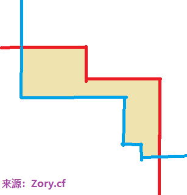

比赛经历
开局听说是看谁破百请吃饭的毒瘤题集
不愧是tkj出得题
（后来听栋老师说，都是煞笔题）
先看t1，fff是什么东西？狗狗协会？
因为有spj，尝试找突破口
手推不出-1的情况，尝试用rand帮我，所以码了个暴力，结果n到25也搞不出-1的点
看来可能根本就没有-1的情况了
那感觉就没什么突破口了
看下一题
天啊看到这种题面和排序有关的题目就虚
因为以前遇到过几次，感觉都和”冒泡排序”有关
果不其然，我这种不会冒泡排序的人虚死了
看下一题
金坷垃？没有任何思路
感觉可能要计算几何，或者扫描线之类的东西
反正不会……
难道这把就要挂机了？
好像很多人都是这样……各个都说不想交了，直接讲题什么的，毫无耐心
现在想想好像只有第二题可以搏一搏了
这种快排好奇特啊
能不能直接先把do while的那个跑一跑，然后枚举每个点，
看看后面有多少个比它小的（逆序对贡献），然后如果有再+1？
这个加入离散化后，可以用树状数组维护
发现过不了大样例啊，对拍一下试试吧
2h过去了……发现暴力超级难打
不过也不是虚度，因为通过模拟分段的无数细节，对分段性质理解加深了
然后我发现空间炸的一匹，vector也没有用（因为大数据非常良心，是一个dfs链状结构）
所以就放弃出大数据的希望了，用来对拍吧
果然逆序对是错误的
主要是两个原因：循环先执行再判断、执行复杂度直接算是当前区间长度
怎么办呢
想着交个暴力算了
然后，突然灵光一现，发现可以改良
因为每一次的复杂度贡献是按照长度来的，然后每个分段，其实就是由
「在该数后面的数中比当前小，而且最远那个」和当前，包围起来的
此时因为查错，我右边的备用小数据中已经有差不多10个了
发现每一个都满足这个性质（一定要先跑一次，单循环冒泡，这样子分段才是明确的）
然后发现这是一个平方级别的做法，不知道能拿多少分
先打了先把，很好改
试试大样例
？？居然过了？？
当时就激动得一匹
因为至少做法正确性没有问题
主要还是速度太慢
想办法优化
数据结构中好像只有具备结构体能力的splay能搞
但当时只有20min了！
以我的码力，这是不可能的
咦考虑一个数组（早就离散化了），存下最后那个？那询问还要按值找
哦不对是可以用线段树维护最大值的，如果保存距离的话
当时还剩15min
火速开始码
他们已经打算交了
那几分钟，我的心跳的好快好快
手指尖在键盘间笨拙地跳舞
熟悉的单点修改区间询问线段树啊，如果码出来，就有ac的希望了
那段时间好漫长，但没想到还是打完了
途中还差点被没看懂的编译错误卡住，现在想想真的好险
最后还是打完了，顺利过了大样例
然后就去吃饭了
心里虚的一匹
主要是时间太紧了，要不然能对拍一下就好了
现在回想起来，还是在暴力上花费太长时间了，虽然那可能是想出正解的基础
这些东西现在回想起来，感觉也很难说清楚吧
其实运气成分还是很大比例的
而且我这速度，后面的发展也很虚啊
三道题，用全部时间，只能做出一道题
吃饭途中得喜报
还是顺利ac了
感谢上帝……
上一次拿rk1已经是省选前了……
只是，没有人和我一样兴奋
都对自己很失望吗
不过这种东西，风水轮流转吧大概
像我上次cf，被吊锤，晚上也是难受的很
————在断网的中午，胡思乱想
T1-Analysis
这是一个非常奇妙的做法
首先把情侣之间用无向边连接，然后把2i-1和2i连接
这样，所有环因为必定是情侣边和相邻边交替的，而且出发边和结束边一定不一样（度只有2）
所以只有偶环，也就是说是个二分图
所以就可以愉快地染色了
windows本地栈，63000左右
如果不是linux，可以考虑手动模拟
T1-Code-Std
|
|
T2-Analysis
原题 Usaco2018 Open Out of Sorts
Luogu4372
Bzoj5277
现在冷静想一想，发现我傻了，根本没有必要用线段树这种这么长的东西
因为已经离散化了，直接用数组，维护最后位置，然后搞一个「前缀最大值」就好了
这要是因为我们要维护的是位置，而这种东西可以通过比较直接确定在不在后面
然后前缀最大值这种东西，当时太紧张，再加上原本的做法是需要动态维护的，所以就没跳出来
当然复杂度没有变化
师兄的做法没看懂，不管了反正不一样
UP：讲课的时候被d飞了
8
6 1 3 2 4 5 2 4
答案是19
虽然答案一样，但画出来的线段完全不对应
（据akc研究后说，它的总数值，代表了某种总贡献，只是神仙地把操作后移了）
去膜了发官方题解
发现可以这样考虑：
对于所谓的快排下去递归冒泡，其实和对整个序列冒泡是等效的
那么考虑每个元素的贡献，就是它左右两边的分隔符都出现之前的时间长度
注意：
- 如果在最开始的时候，它就是单个元素，那么也会被统计一次
- 枚举元素的时候，是按照排序后的位置来找左右两边的
那么现在问题转化为计算n-1个分隔符出现的时间
对于在i和i+1之间那个分隔符，它出现时，序列前i个元素已经在其前面了
那么现在的关键就是第i大（稳定排序下）那个元素的位置r，要多久才能到i
显然现在位于i的那个元素，一定比位于r的那个要大，否则前面已经足够了
因为更大，那么每次冒泡，这个泡i一定会把r给换过来，也就是说每次冒泡往前一位
所以说从r到i的时间恰恰是r-i
T2-Code-Old
|
|
T2-Code-Std
|
|
T3-Analysis
原题 Usaco2018 Jan Sprinklers
Luogu4184
Bzoj5187
首先，最后的可行多边形一定是一个外凸边形
那么有一个重要的性质，就是对于这种形状（大概是两个阶梯围成的）

然后这种图形的可行解非常好处理，因为对于每个点，它的另一个端点的可行区域就在其左下侧区域中
如果要直接暴力的话，现在就可以得到50分了
考虑处理出每一列的up和low表示上下界
这个东西的维护，可以考虑先记录一个转折点，然后最后再线性推一推就好了（因为有单调性）
接下来推式子
$$
\sum_{i=0}^{n-1}
{
\sum_{j=low[i]+1}^{up[i]}
「
\sum_{k=low[i]}^{j-1} i-left[k]
」
}
$$
$$
\sum_{i=0}^{n-1}
{
\sum_{j=low[i]+1}^{up[i]}
「
i \times (j-low[i])
-
\sum_{k=low[i]}^{j-1} left[k]
」
}
$$
$$
\sum_{i=0}^{n-1}
{
i \times
\sum_{j=low[i]+1}^{up[i]}
「
(j-low[i])
-
\sum_{k=low[i]}^{j-1} left[k]
」
}
$$
$$
\sum_{i=0}^{n-1}
「
\frac{
i (up[i]-low[i]) (up[i]-low[i]+1)
}{2}
-
\sum_{j=low[i]+1}^{up[i]}
\sum_{k=low[i]}^{j-1} left[k]
」
$$
$$
\sum_{i=0}^{n-1}
「
\frac{
i (up[i]-low[i]) (up[i]-low[i]+1)
}{2}
-
\sum_{t=low[i]}^{up[i]-1} left[t] \times (up[i]-t)
」
$$
$$
\sum_{i=0}^{n-1}
「
\frac{
i (up[i]-low[i]) (up[i]-low[i]+1)
}{2}
-
up[i] \times \sum_{t=low[i]}^{up[i]-1} left[t]
+
\sum_{t=low[i]}^{up[i]-1} left[t] \times t
」
$$
$$
\sum_{i=0}^{n-1}
「
\frac{
i (up[i]-low[i]) (up[i]-low[i]+1)
}{2}
-
up[i] \times \sum_{t=low[i]}^{up[i]-1} left[t]
+
\sum_{t=low[i]}^{up[i]-1} left[t] \times t
」
$$
所以维护一个前缀和就好了
T3-Code-Std
|
|